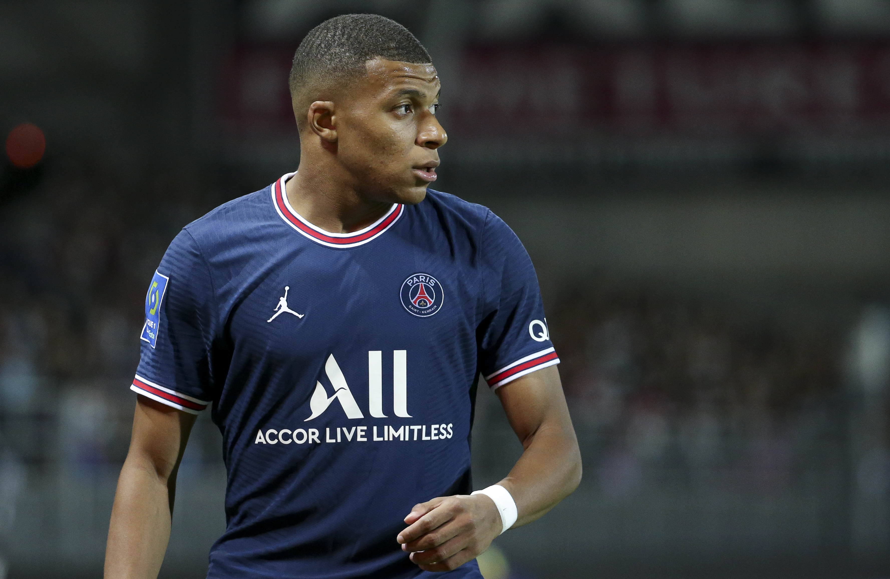
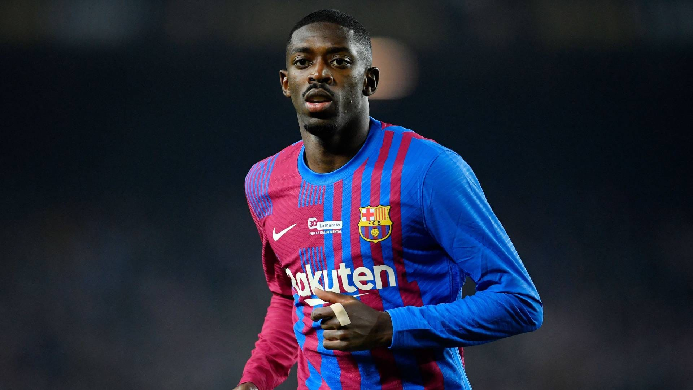
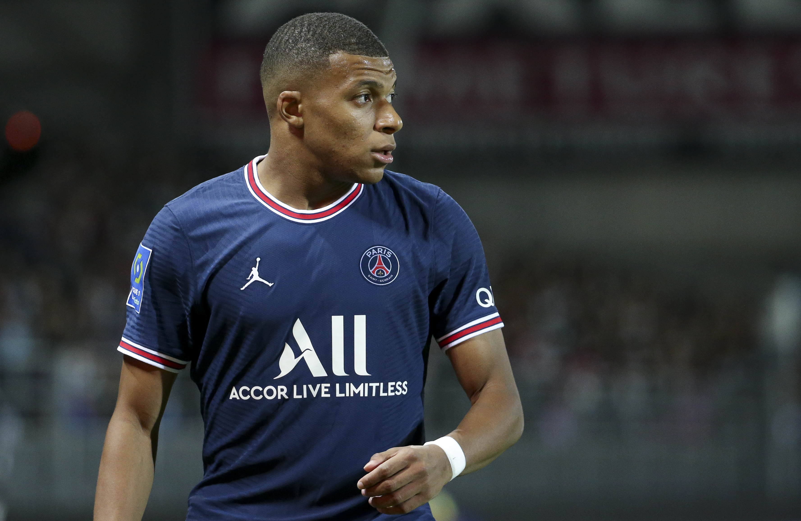
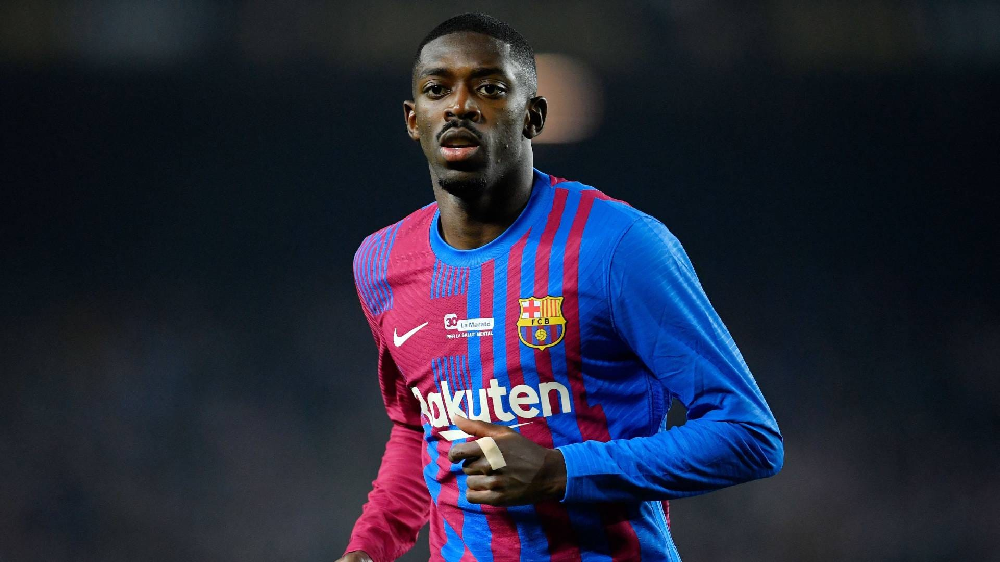

pengenalan tokoh (Introduction):
neymar's sosial media:


Neymar da Silva Santos Júnior yang umumnya dikenal sebagai Neymar atau Neymar Jr, adalah pemain sepak bola profesional Brasil yang bermain untuk klub Arab Saudi Al-Hilal. Dia bermain sebagai penyerang atau pemain sayap.
- Kelahiran: 5 Februari 1992 (usia 31 tahun), Mogi das Cruzes, São Paulo, Brasil
- Tim saat ini: Al-Hilal SFC (#10 / Penyerang), Tim nasional sepak bola Brasil (#10 / Penyerang), Brazil
- Daftar team yang pernah di bela: 2023 (Al-Hilal SFC), 2018(PSG),2013(barca),2009(santos)
- Orang tua: Neymar da Silva Sr, Nadine Santos
- Gaji: 40,8 juta GBP (2022)
- Tinggi: 1,75 m
- Kebangsaan: Brasil
LATAR BELAKANG
Neymar da Silva Santos Junior lahir pada 5 Februari 1992 di Mogi das Cruzes, Brasil. Ayahnya bernama Neymar da Silva Sr. dan ibunya bernama Nadine Santos. Neymar tumbuh dalam keluarga yang kurang mampu. Ayahnya bekerja sebagai mantan pemain sepak bola dan ibunya bekerja sebagai penjual kosmetik. Neymar menemukan passionnya dalam sepakbola sejak dia masih berusia dini, yaitu sekitar 3 tahun. Saat itu dia bergabung dengan klub sepakbola lokal yang dilatih oleh ayahnya. Dan mulai usia 11 tahun, Neymar bergabung dengan Santos FC. Meski mengalami cedera serius, ia telah pulih dengan baik dan mampu kembali bermain di level tertinggi. Neymar sangat memperhatikan pola makan dan rutinitas olahraganya untuk menjaga kondisi fisik prima, dengan fokus pada diet sehat berbasis sayur, buah dan protein tanpa lemak. Neymar tidak menyelesaikan pendidikan formalnya karena memutuskan untuk fokus menekuni karir sepak bola sejak usia 11 tahun dengan bergabung di klub pemuda Santos. Sang ayah paham betul pentingnya pendidikan, sehingga mengatur guru privat untuk Neymar selama masa remaja. Melalui guru privat inilah Neymar belajar bahasa Inggris, matematika, dan ilmu pengetahuan, sambil tetap berlatih dan mengasah kemampuan sepak bolanya. Neymar didiagnosa mengidap gangguan pertumbuhan hormon yang membutuhkan terapi khusus yang harganya cukup tinggi, yaitu sekitar $900 per bulan. Hal ini membuat keluarganya kesulitan untuk memberikan terapi tersebut kepada Neymar. Namun kemudian Neymar bertemu dengan pelatih Barcelona FC yang memberikan tawaran kepada keluarga Neymar untuk sebuah kesempatan bermain sepakbola dalam masa percobaan. Hal ini membawa perubahan besar dalam sejarah sepakbola dunia. Sejak saat itu, nama Neymar menjadi sinonim dengan keajaiban di atas lapangan hijau.
 


